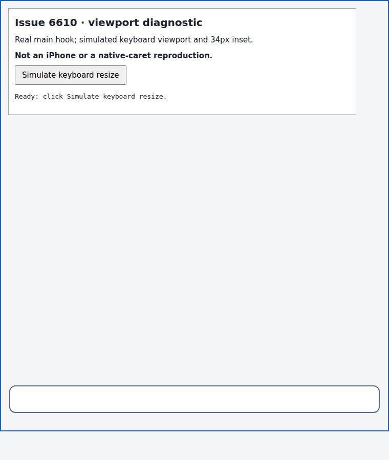
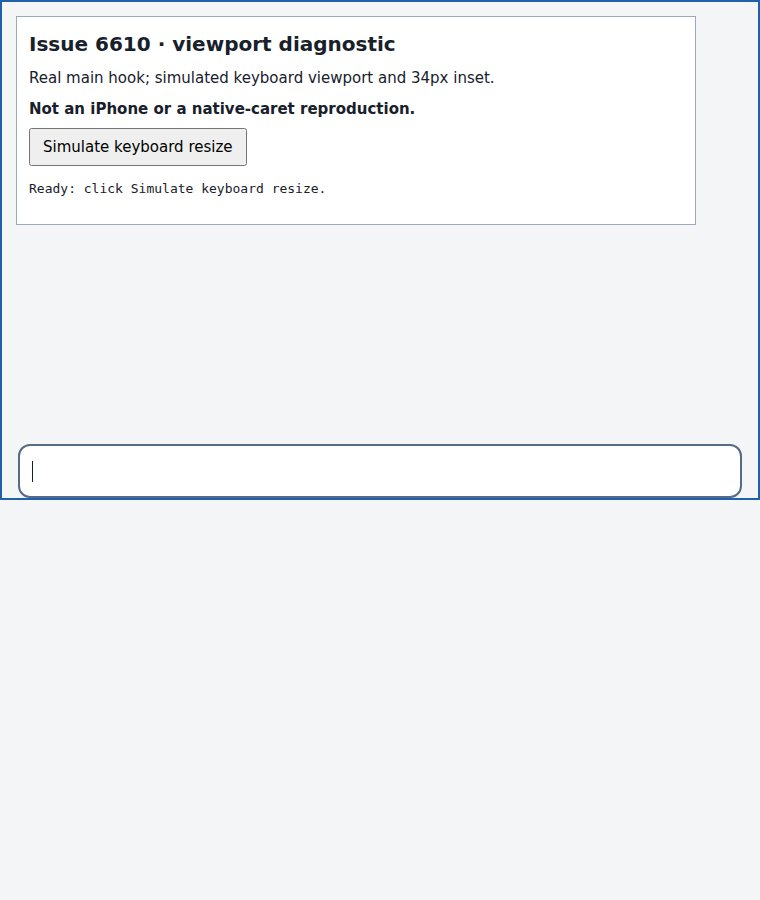
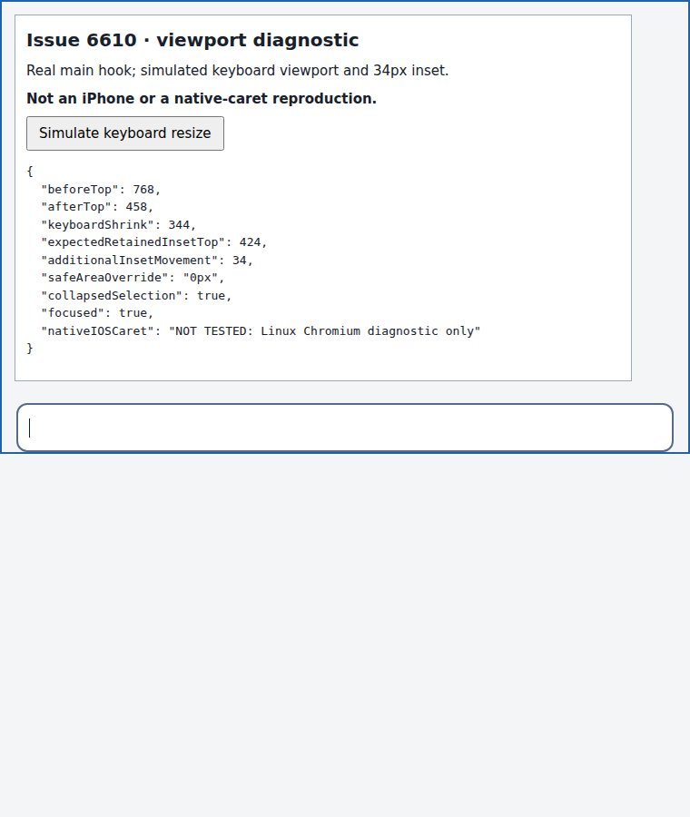

#6610 · Mobile viewport geometry and caret validation
Trusted origin/main base: 8b70ad8f57721881d3348e65537911e3626dc9d4.
PARTIALLY REPRODUCED · root-cause confidence: medium · reproduction label: partial-repro
1. TL;DR
The report describes an empty rich-text editor whose native iPhone caret remains above the text until typing. The trusted main viewport hook does remove bottom safe-area padding after a focused editor sees a keyboard-sized viewport shrink. A focused test and a real Chromium layout diagnostic verify this layout trigger; a simulated 34px safe area produces exactly 34px of additional editor movement. Neither jsdom nor Linux Chromium can establish whether iOS leaves its native caret painted at the previous position. The overall verdict is therefore partial, not confirmation of the iPhone visual defect. Existing open PR #6605 already links the issue, so no duplicate fix PR was created.
2. Claims vs findings
| Claim | Status | Evidence |
|---|---|---|
| Keyboard opening removes the safe-area bottom inset while an editor is focused. | Verified | The real hook writes 0px after the simulated viewport shrinks from 844 to 500. Both clean-checkout test runs pass. |
| Removing a 34px inset adds a 34px editor move. | Verified, conditional | The Chromium harness explicitly supplies a 34px inset. Editor top is 768 before and 458 after; retaining the inset would give 424. The extra movement is +34px. This is not a measurement of an iPhone's actual safe area. |
| The native iOS caret stays behind until the first character. | Unverified | No physical iPhone or iOS simulator was used. Native caret painting is not exposed by DOM selection. Chromium shows an aligned caret. |
| Compact composer expansion can mask the symptom. | Plausible, not device-verified | Main defers coarse-pointer focus expansion until resize or timeout. A separate placeholder effect dispatches an editor transaction. Whether that repaints the affected iOS caret still needs a device experiment. |
| Third-party tray and rich-text placeholder layout are not involved. | Not established | No third-party plugin code or production instance was accessed. The minimal harness exercises only the core viewport hook. |
3. Environment
- Public target repository: get-bb/bb; trusted main commit above; package version 0.48.0.
- Linux 4.19.0-gvisor; Node v22.19.0; pnpm 9.15.0; Vitest 4.1.1; jsdom.
- Visual diagnostic: HeadlessChrome/149.0.0.0, Linux x86_64, 760 × 900 browser window; simulated 844 → 500 visual viewport; explicitly supplied 34px bottom inset.
- No real provider session, user runtime store, authentication, or production data was used. No server/daemon app instance was required.
- Temporary static servers on ports 29495 and 23194 could not be reached from the browser host. The screenshot harness was instead loaded as a self-contained data URL; no application data directory exists.
4. Minimal reproduction
This is a reproduction of the layout precondition, not an automated assertion about native iOS caret paint. No failing bug regression is claimed.
- Clone trusted main and check out the exact base:
git clone https://github.com/get-bb/bb.git bb-6610 cd bb-6610 git checkout --detach 8b70ad8f57721881d3348e65537911e3626dc9d4 pnpm install --frozen-lockfile --prefer-offline
- Save the linked diagnostic test in
apps/app/src/components/layout/issue6610.repro.test.tsx. It imports the unchanged production hook. - Run the focused diagnostic and the existing hook suite:
pnpm exec turbo run test --filter=@bb/app -- src/components/layout/issue6610.repro.test.tsx src/components/layout/useMobileVisualViewportHeight.test.tsx
- Expected and actual: both runs pass one diagnostic test and all 14 pre-existing hook tests. The diagnostic checks that resize writes a 0px bottom override and a 500px shell, while focus and the collapsed DOM selection remain intact.
First checkout: Test Files 2 passed (2) Tests 15 passed (15) Duration 2.51s Second checkout: Test Files 2 passed (2) Tests 15 passed (15) Duration 2.61s
The complete diagnostic source is inline below. Raw logs and source artifacts are retained outside the public report repository, as its publication policy requires.
Full diagnostic test
// @vitest-environment jsdom
import { act, cleanup, render, waitFor } from "@testing-library/react";
import { useState } from "react";
import { afterEach, expect, it, vi } from "vitest";
import { useMobileVisualViewportHeight } from "./useMobileVisualViewportHeight";
class DiagnosticViewport extends EventTarget {
height = 844;
offsetTop = 0;
scale = 1;
}
function Shell() {
const [shell, setShell] = useState<HTMLDivElement | null>(null);
useMobileVisualViewportHeight(shell, true);
return (
<div ref={setShell} data-testid="shell">
<div
contentEditable
suppressContentEditableWarning
data-testid="editor"
/>
</div>
);
}
afterEach(() => {
cleanup();
vi.restoreAllMocks();
});
it("changes focused rich-editor shell geometry without losing DOM focus or selection", async () => {
const viewport = new DiagnosticViewport();
const viewportDescriptor = Object.getOwnPropertyDescriptor(
window,
"visualViewport",
);
const heightDescriptor = Object.getOwnPropertyDescriptor(
document.body,
"clientHeight",
);
Object.defineProperty(window, "visualViewport", {
configurable: true,
value: viewport,
});
Object.defineProperty(document.body, "clientHeight", {
configurable: true,
value: 844,
});
vi.spyOn(window, "scrollTo").mockImplementation(() => {});
try {
const result = render(<Shell />);
const editor = result.getByTestId("editor");
const shell = result.getByTestId("shell");
Object.defineProperty(editor, "isContentEditable", {
configurable: true,
value: true,
});
const selection = window.getSelection();
if (!selection) throw new Error("DOM selection unavailable");
const range = document.createRange();
range.setStart(editor, 0);
range.collapse(true);
selection.removeAllRanges();
selection.addRange(range);
act(() => editor.focus());
await act(async () => {
await new Promise<void>((resolve) =>
window.requestAnimationFrame(() => resolve()),
);
});
expect(document.body.style.getPropertyValue("--bb-safe-area-bottom")).toBe(
"",
);
act(() => {
viewport.height = 500;
viewport.offsetTop = 40;
viewport.dispatchEvent(new Event("resize"));
});
await waitFor(() => expect(shell.style.height).toBe("500px"));
expect(document.body.style.getPropertyValue("--bb-safe-area-bottom")).toBe(
"0px",
);
expect(shell.style.top).toBe("40px");
expect(document.activeElement).toBe(editor);
expect(selection.anchorNode).toBe(editor);
expect(selection.isCollapsed).toBe(true);
console.info(
JSON.stringify({
viewportHeight: viewport.height,
safeAreaOverride: "0px",
shellTop: shell.style.top,
shellHeight: shell.style.height,
focused: document.activeElement === editor,
collapsedSelection: selection.isCollapsed,
nativeCaretPaint: "not observable in jsdom",
}),
);
} finally {
cleanup();
if (viewportDescriptor)
Object.defineProperty(window, "visualViewport", viewportDescriptor);
else Reflect.deleteProperty(window, "visualViewport");
if (heightDescriptor)
Object.defineProperty(document.body, "clientHeight", heightDescriptor);
else Reflect.deleteProperty(document.body, "clientHeight");
}
});
Real browser layout diagnostic
Build the diagnostic from the two complete source blocks below, open its HTML, then click Simulate keyboard resize. The page uses the main hook, focuses an empty contenteditable, then dispatches a resize on an explicit diagnostic viewport. Its surrounding shell mirrors the bottom-padding relationship, not the full BB app or a third-party composer. After two animation frames, it records:
{
"beforeTop": 768,
"afterTop": 458,
"keyboardShrink": 344,
"expectedRetainedInsetTop": 424,
"additionalInsetMovement": 34,
"safeAreaOverride": "0px",
"collapsedSelection": true,
"focused": true,
"nativeIOSCaret": "NOT TESTED: Linux Chromium diagnostic only"
}
The 34px result is conditional on the explicit inset, not proof of stale caret pixels. Screenshot captures are actual browser images, converted losslessly from captured JPEG to PNG; none is a fabricated iPhone screenshot.



Copy the React entry to apps/app/issue6610-harness.tsx in the trusted checkout and bundle it with the already installed esbuild:
pnpm exec esbuild apps/app/issue6610-harness.tsx --bundle --minify --define:process.env.NODE_ENV='"production"' --format=iife --platform=browser --jsx=automatic --outfile=harness.jsSave the HTML block as
harness.html next to that output and open it in a browser. The diagnostic bundle was generated only from the trusted checkout and this entry, with no added dependency. Build output is not published.
Complete React entry
import React, { useState } from "react";
import { createRoot } from "react-dom/client";
import { useMobileVisualViewportHeight } from "./src/components/layout/useMobileVisualViewportHeight";
class DiagnosticViewport extends EventTarget {
height = 844;
offsetTop = 0;
scale = 1;
}
const viewport = new DiagnosticViewport();
Object.defineProperty(window, "visualViewport", {
configurable: true,
value: viewport,
});
function Harness() {
const [shell, setShell] = useState<HTMLDivElement | null>(null);
const [trace, setTrace] = useState("Ready: click Simulate keyboard resize.");
useMobileVisualViewportHeight(shell, true);
function simulate() {
const editor = document.getElementById("editor");
if (!editor) throw new Error("Missing editor");
editor.focus();
const range = document.createRange();
range.setStart(editor, 0);
range.collapse(true);
const selection = window.getSelection();
selection?.removeAllRanges();
selection?.addRange(range);
const beforeTop = editor.getBoundingClientRect().top;
viewport.height = 500;
viewport.dispatchEvent(new Event("resize"));
requestAnimationFrame(() =>
requestAnimationFrame(() => {
const afterTop = editor.getBoundingClientRect().top;
const expectedRetainedInsetTop = beforeTop - 344;
setTrace(
JSON.stringify(
{
beforeTop,
afterTop,
keyboardShrink: 344,
expectedRetainedInsetTop,
additionalInsetMovement: afterTop - expectedRetainedInsetTop,
safeAreaOverride: document.body.style.getPropertyValue(
"--bb-safe-area-bottom",
),
collapsedSelection: selection?.isCollapsed,
focused: document.activeElement === editor,
nativeIOSCaret: "NOT TESTED: Linux Chromium diagnostic only",
},
null,
2,
),
);
}),
);
}
return (
<>
<div id="shell" ref={setShell}>
<div className="composer">
<div
id="editor"
contentEditable
suppressContentEditableWarning
aria-label="Diagnostic editor"
/>
</div>
</div>
<section>
<h1>Issue 6610 · viewport diagnostic</h1>
<p>Real main hook; simulated keyboard viewport and 34px inset.</p>
<p>
<strong>Not an iPhone or a native-caret reproduction.</strong>
</p>
<button
onMouseDown={(event) => event.preventDefault()}
onClick={simulate}
>
Simulate keyboard resize
</button>
<pre id="trace">{trace}</pre>
</section>
</>
);
}
createRoot(document.getElementById("root")!).render(<Harness />);
Complete HTML/CSS
<!doctype html>
<html lang="en"><head><meta charset="utf-8"><meta name="viewport" content="width=device-width, initial-scale=1"><title>Issue 6610 diagnostic</title>
<style>
* { box-sizing: border-box; }
body { margin: 0; height: 844px; font: 15px/1.5 system-ui; background: #f4f5f7; color: #18202c; }
#shell { position: absolute; top: 0; height: 844px; width: 100%; display: flex; flex-direction: column; justify-content: end; padding: 12px 16px var(--bb-safe-area-bottom, 34px); border: 2px solid #2161ac; }
.composer { background: white; padding: 12px; border: 2px solid #556b89; border-radius: 12px; }
#editor { min-height: 26px; font: 18px/26px system-ui; outline: none; }
section { position: relative; margin: 16px; max-width: 680px; padding: 12px; background: white; border: 1px solid #9ba9bb; }
h1 { font-size: 20px; margin: 0; }
p { margin: 8px 0; }
pre { font-size: 13px; white-space: pre-wrap; }
button { padding: 8px 12px; font-size: 15px; }
</style></head><body><div id="root"></div><script src="harness.js"></script></body></html>
5. Root cause
Verified layout mechanism: setKeyboardInset and updateKeyboardInset replace the safe-area variable with 0px once the focused viewport shrinks by at least 80px. updateHeight performs this on the scheduled viewport pass, undoes page panning if present, and writes shell top/height. AppLayout content-shell classes consume this variable as bottom padding, falling back to the device safe area otherwise.
viewportStyleRoot.style.setProperty( SHELL_SAFE_AREA_BOTTOM_PROPERTY, "0px", );
When the focused editor sits at the bottom of that shell, removing padding moves it downward by the previous inset relative to a shell that retained its padding. The browser harness verifies this relationship with a 34px input. This test does not validate the reported phone timings, pan cancellation, or the phone's actual geometry.
Native-caret hypothesis: WebKit may retain native caret geometry across the post-focus shell/inset movement until another editor update. The hook changes geometry but contains no selection or editor transaction update. DOM focus and selection remain valid in the diagnostic; they cannot tell whether native caret pixels are stale. Thus stale WebKit painting is a plausible explanation, not a verified browser root cause.
FollowUpPromptBox focus expansion defers expansion until a keyboard-sized resize or timeout; the placeholder layout effect dispatches a transaction. These are credible reasons for a timing difference between collapsing and always-expanded renderers, but no comparison on an iPhone was performed.
6. Proposed fix / next experiment
First verify the native symptom on an iPhone using an always-expanded core-derived editor. Record editor geometry and caret pixels through focus, keyboard resize, and the first input. Compare a post-layout selection refresh with an unchanged control, then test actual typing, non-collapsed selection, IME composition, focus changes, keyboard dismissal, and rotation. Do not simply keep the safe-area padding: the existing suite intentionally removes it above an open keyboard.
No production fix is justified solely by a passing layout diagnostic. No regression test that fails on main for the actual native-paint problem was established. A duplicate PR would also violate the open-PR gate.
7. Linked PR review
#6605 — static review only
GitHub timeline metadata and a separate open-PR search both link this PR to the issue. Its diff was read as untrusted data; its branch, tests, and code were not checked out or executed.
The diff schedules a collapsed-selection refresh after layout changes, checks that the selection belongs to a focused contenteditable, and stops refreshing at input/composition or teardown. This targets the proposed repaint mechanism without retaining an unwanted keyboard gap. Its selection-call tests cannot prove what native iOS draws.
Findings: apps/app/src/components/layout/useMobileVisualViewportHeight.ts (integration caution): the reviewed diff is based on an older hook signature with an enabled argument, unlike the trusted main signature inspected here. GitHub also reports the PR as CONFLICTING; it must be reconciled with current main. useMobileVisualViewportHeight.test.tsx (verification gap): the additional tests assert DOM selection operations, not iPhone caret pixels. Neither finding is a verified device regression. No result from the PR's own test runs is treated as evidence for this report.
Verdict: plausible candidate; not device-verified. The duplicate-fix gate alone prevents a new PR from this run.
8. Related issues
#3950 concerns large-paste toolbar reachability rather than an empty-editor caret. Only its metadata was inspected; no duplicate relationship was established.
9. Verification
The same agent created two separate clean trusted checkouts at 8b70ad8f57721881d3348e65537911e3626dc9d4, named base and verify in a unique temporary workspace. The second used git worktree add --detach, showed no source changes before installing, performed a separate frozen install, and received only the exact diagnostic test artifact. Production code was unchanged in both.
git worktree add --detach ../verify 8b70ad8f57721881d3348e65537911e3626dc9d4 cd ../verify pnpm install --frozen-lockfile --prefer-offline cp ../evidence/repro/issue6610.repro.test.tsx apps/app/src/components/layout/issue6610.repro.test.tsx pnpm exec turbo run test --filter=@bb/app -- src/components/layout/issue6610.repro.test.tsx src/components/layout/useMobileVisualViewportHeight.test.tsx
Result: 15/15 tests passed again, including all 14 existing hook tests. This repeats the layout-trigger diagnostic, not the native-caret defect, and is not an independent reviewer. No application server or store was started for either test run; therefore no reused app ports or runtime data exist. Browser screenshots and the 34px pixel measurement were captured only in the first checkout's diagnostic. The final verdict remains partial; there was no correction to the claimed native behavior because it was never promoted to verified. A later main fetch advanced to d4af92823b265bd69f42ed7a3e7d7818006911fd; its only intervening commit changes sidebar Settings behavior, not any implicated viewport or composer path.
10. Appendix
Build preparation: frozen install succeeded. The initial full Turbo build failed because the GitHub plugin could not resolve unbuilt SDK host/process outputs. Building the SDK declarations and runtime through Turbo, then repeating the full build, succeeded: 72/72 tasks. This was a fresh-checkout dependency ordering problem, not evidence of the caret bug. No source repair was made.
pnpm exec turbo run build pnpm exec turbo run build:types --filter=@get-bb/plugin-sdk pnpm exec turbo run build --filter=@get-bb/plugin-sdk pnpm exec turbo run build pnpm exec oxfmt apps/app/src/components/layout/issue6610.repro.test.tsx apps/app/issue6610-harness.tsx git diff --check
Existing hook tests also passed alone before the diagnostic was added (14/14). Both source checkouts passed git diff --check. No production diff, fix branch, fix commit, or new PR was made. Local diagnostic artifacts remain outside the user's checkout.
Trust: issue content and linked PR metadata/diff were treated only as untrusted claims. No linked URL from the issue body was fetched, no third-party plugin code or issue-provided code was executed, and no production or secret data was read. Code references were checked against the recorded main commit; images were inspected before publication.
Additional read-only investigation: GitHub GraphQL issue properties, labels, comments, and cross-reference metadata; gh pr view/gh pr diff for the metadata-linked PR; gh search prs; targeted source reads and git log. Browser automation opened the diagnostic, captured the before state, clicked the simulation control, then captured the resulting measurements and aligned Chromium caret.
Raw test log paths are normalized to <checkout> for portability; assertion results and timing lines are unchanged. No physical iPhone evidence is included.